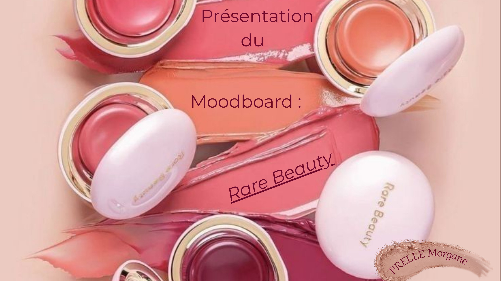

Moodboard Rare Beauty
Une planche d'inspiration qui décrypte l'univers visuel et les valeurs d'une marque de maquillage inclusive.

Contexte
Dans le cadre d'une activité réalisée en formation, j'ai choisi la marque Rare Beauty, fondée par Selena Gomez. J'ai commencé par réaliser un moodboard afin de comprendre son univers, son identité visuelle, ses valeurs et son positionnement. Cette étape permet de mieux connaître la marque avant d'imaginer des publications adaptées à son image et à sa communauté.
Objectifs
- Définir l'identité visuelle de la marque.
- Identifier ses couleurs, son univers et ses valeurs.
- Comprendre son positionnement.
- Trouver des inspirations pour créer des contenus cohérents avec son image.
Ma démarche
J'ai observé les produits, les packagings, les campagnes et la présence en magasin de la marque, puis sélectionné les éléments les plus représentatifs : textures de maquillage, teintes douces et chaudes, portraits naturels, diversité des profils. Le tout est organisé en une planche unique, lisible d'un seul coup d'œil.
- Canva
- Analyse de marque
- Moodboard
Le moodboard
Clique sur la planche pour l'afficher en grand.

Identité de la marque
Palette
- #F7F1E9 · Ivoire
- #594139 · Brun cacao
- #B86F58 · Terracotta
- #E8C7C8 · Rose poudré
- #D8B6A0 · Sable rosé
Des teintes chaudes et naturelles : un fond ivoire, un brun profond pour le contraste, et des roses et terracotta qui rappellent les produits eux-mêmes.
Typographie
Montserrat : une police sans empattement, ronde et lisible, en accord avec le ton accessible de la marque. Le slogan « You are Rare. » joue sur le contraste entre une écriture fine et un mot en italique mis en avant.
Valeurs
- Authenticité
- Audace
- Bienveillance
- Confiance en soi
- Inclusivité
Ce que j'ai appris
- Définir l'identité visuelle et l'univers d'une marque.
- Identifier ses couleurs, typographies, valeurs et son ton.
- Comprendre son positionnement et sa cible.
- Assurer une cohérence dans les publications grâce à des éléments visuels répétés.
- Éviter les contenus hors-sujet en respectant l'image de la marque.
- Faire apparaître les valeurs de la marque (ex. : l'inclusivité) dans les images, et pas seulement dans les textes.